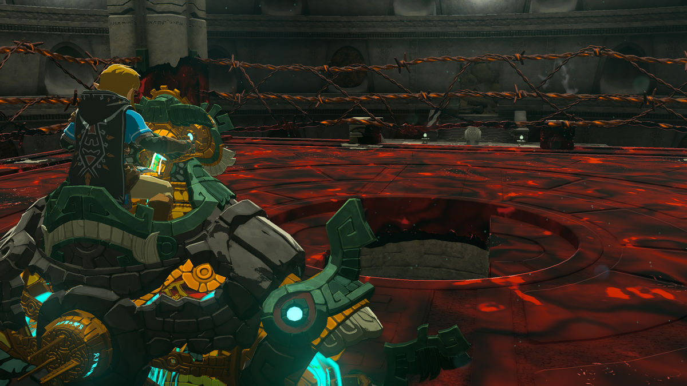
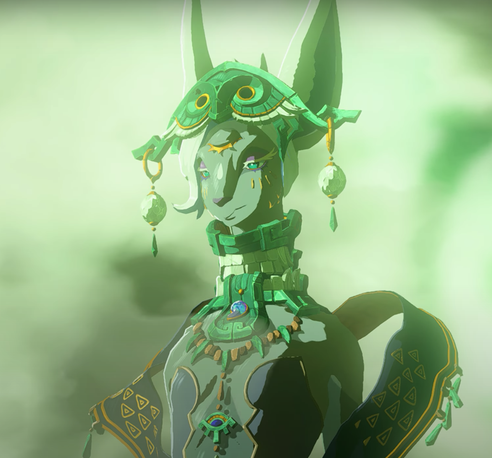

先说结论：四步走完
上一篇在龙首岛拿到的左纳乌遗物是米涅鲁的面具。这篇就一件事：把面具带下地底，让米涅鲁有身体可用。全程分四步——托比奥空洞乘电梯下地底、构装体工厂里米涅鲁现身、四座仓库取零件组装、乘构装体去灵殿击败被夺构装体、取回灵之秘石。没有时间限制，地底黑、瘴气多，先点亮树根再办事。
| 步骤 | 地点 | 关键动作 |
|---|---|---|
| 1. 托比奥空洞下地底 | 龙首岛 → 法罗尼地面 | 面具挂翼上飞向地面光束落点，托比奥空洞乘电梯下地底 |
| 2. 构装体工厂 | 法罗尼地底 | 面具放进工厂模具，米涅鲁现身 |
| 3. 四座仓库取零件 | 工厂周围 | 各仓库激活基座放出装箱零件，带回工厂组装 |
| 4. 灵殿 | 工厂东南 | 乘构装体去灵殿，击败被夺构装体，取回灵之秘石 |
接取与奖励
| 项目 | 内容 |
|---|---|
| 接取 | 龙首岛拿到左纳乌遗物后自动开始 |
| 前置 | 环卡遗迹的秘密 |
| 位置 | 托比奥空洞 · 法罗尼地底 · 构装体工厂 · 灵殿 |
| 奖励 | 灵之贤者米涅鲁加入、灵之构装体、心之容器、米涅鲁的誓言 |
| 后续 | 开启「大师之剑的线索」 |
出发前准备
- 发光果、发光种子：地底一片黑，靠树根和发光果照亮。
- 料理与武器：地底有瘴气和敌人，备点回血料理；打被夺构装体要用到构装体，自己的武器只是备用。
- 滑翔伞：托比奥空洞那段要飞一段。
- 究极手材料不用自带：翼、风扇、操纵杆都在龙首岛台阶下现成放着。
第一步：托比奥空洞带遗物下地底
拿到面具别急着走——面具下面有台阶，顺着绿光束往下走，台阶底下停着一架现成的飞行器：翼、风扇、操纵杆都在。用究极手把面具挂在翼前面，沿着绿光束飞向地面，光束落在托比奥空洞以北的法罗尼地面上。
- 落地后把面具从翼上拆下来，搬到光束指着的雕像跟前，暗门打开。
- 下楼梯进托比奥空洞，裂缝底部有个平台，把面具放到平台上，平台下行进地底。
- 一出电梯先回头：电梯后面就是穆奥库伊树根，先点亮它，地底这片就亮了。
💡 飞的那段不用自己拼飞行器
龙首岛台阶下那架就是现成的，挂上面具直接飞，别在包里翻材料现造。第二步：构装体工厂，米涅鲁现身
顺着绿光往前走就是构装体工厂。工厂入口有个大模具，躯干已经放在里面了，只差一个头。把面具放进模具的头部位置，米涅鲁的声音正式现身：她是灵之贤者，肉身早已不在，只剩灵魂寄在面具里。她要你去四座仓库取零件，给她造一具能容纳灵魂的身体。

米涅鲁交代完先别走——工厂附近有树根，点亮了再出发，地底赶路全靠树根照亮。
第三步：四座仓库取零件
四座仓库都在工厂周围，各有一道绿光指着方向，顺序任意，哪座顺路先去哪座。每座仓库里都有一只装箱的零件：到仓库里激活基座，箱子打开，零件就放出来了，带回工厂模具装上。
| 仓库 | 方位 | 坐标（约） |
|---|---|---|
| 左腿仓库 | 工厂东南 | (0960, -2298, -0557) |
| 左臂仓库 | 工厂西南 | (0752, -2382, -0524) |
| 右臂仓库 | 工厂西北 | (0641, -2106, -0519) |
| 右腿仓库 | 工厂东北 | (1152, -2048, -0516) |
💡 四座仓库内部的解谜各不相同
通用做法只有一句——激活基座放出装箱的零件。别照搬某一座的机关去套另一座，到了仓库里按眼前的机关现想。
四件零件都装上，米涅鲁的构装体就站起来了。乘上去，往东南去灵殿。
第四步：乘构装体去灵殿
乘着米涅鲁的构装体往东南走就是灵殿。灵殿里触发电梯下到地下室，遍布瘴气，被夺构装体挡在秘石前面。
- 被夺构装体手里拿着武器，硬碰硬吃亏：给构装体手臂装上尖刺球，用 ZL 格挡住它的攻击，再还手把它推进带电的绳索里，电一下掉不少血。
- 打掉一段血它会飞上天，落地那一下砸出大范围冲击，先躲开，等它落地僵直再格挡反击。
- 打完拿心之容器，祭坛上就是灵之秘石。米涅鲁的灵魂直接进入秘石，立下米涅鲁的誓言——从此她就是第五位贤者，灵之贤者。
- 任务到此完成，开启「大师之剑的线索」。
💡 灵殿不写坐标
前期笔记里的灵殿坐标自相矛盾，只有一个来源，写了就是误导。跟着构装体走，灵殿就在工厂东南方向。关键信息
| 项目 | 内容 |
|---|---|
| 任务类型 | 主线任务，第 17 篇 |
| 前置任务 | 环卡遗迹的秘密 |
| 关键地点 | 托比奥空洞、法罗尼地底、构装体工厂、灵殿 |
| 关键道具 | 左纳乌遗物（米涅鲁的面具）、灵之秘石 |
| 关键数字 | 四座仓库、四件零件；被夺构装体分两个阶段 |
| 后续任务 | 大师之剑的线索 |
容易翻车的地方
- 以为要先清雷云：不用。祭坛仪式已经让雷云群岛现形，本任务全程在地底，跟雷云没关系。（雷光套装也不防雷，上岛要收金属装备或穿橡胶套装。）
- 在灵殿里组装构装体：组装在构装体工厂的模具上完成，到了灵殿直接开打。
- 满世界找零件：四座仓库都在工厂周围，各有绿光指着，别往远处跑。
- 地底摸黑走：先点亮树根，穆奥库伊树根就在电梯后面。
- 打完被夺构装体扭头就走：心之容器和祭坛上的灵之秘石都在地下室，拿完再走。
- 以为米涅鲁的灵魂是从普尔亚平板转入秘石：不是，灵魂直接进入秘石——从平板转入那是洛贝利的事。
一句话总结
面具挂翼飞下地面、托比奥空洞乘电梯下地底、构装体工厂四座仓库取零件组装、乘构装体去灵殿击败被夺构装体、米涅鲁的灵魂进入秘石立下誓言——五位贤者齐聚了，下一站去克洛格森林找大德库树。